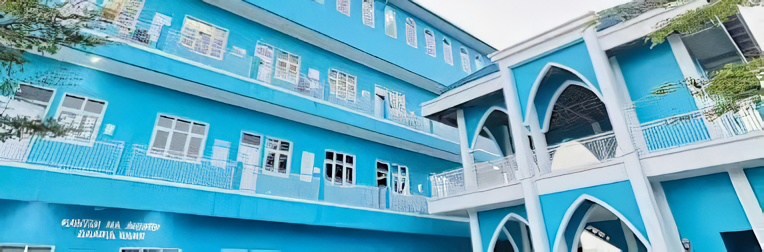
VISI SEKOLAH
"Terwujudnya Madrasah Aliyah Inovatif Daarul Ihsan Bandung yang Baik, Berilmu dan Bermanfaat."
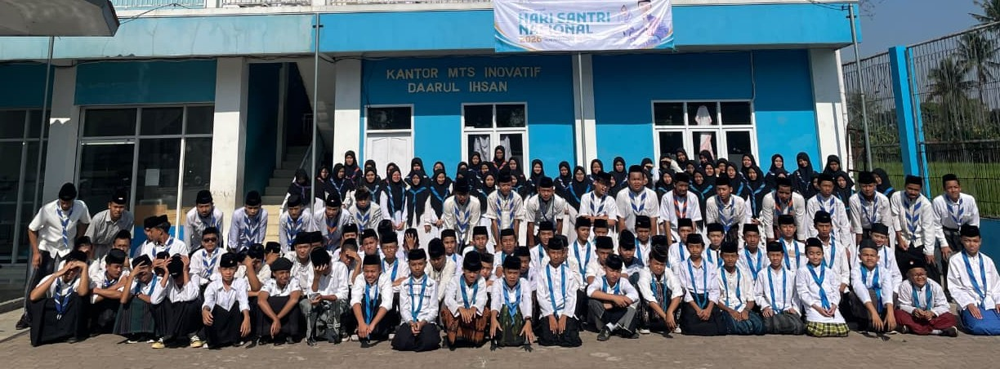
UNGGUL & BERAKHLAK MULIA
Integrasi kurikulum pesantren dan pendidikan formal berbasis digital untuk mencetak generasi calon pemimpin masa depan.
Profil MA Inovatif Daarul Ihsan
Sejarah & Latar Belakang
Sejarah MA Inovatif Daarul Ihsan Bandung berawal dari keprihatinan Dr. K.H. Saefudin Abdul Fattah (Ajengan Aef) terhadap anak-anak yatim dan dhuafa yang kesulitan biaya sekolah, sehingga beliau merintis pengajian gratis di sebuah rumah kontrakan sederhana. Seiring meningkatnya kepercayaan masyarakat, didirikanlah Yayasan Daarul Ihsaan Rumah Kebaikan pada tahun 2015, yang disusul peresmian Pondok Pesantren Inovatif Daarul Ihsaan di Cimahi pada tahun 2018. Untuk mengintegrasikan pendidikan agama dan umum, yayasan mendirikan sekolah formal termasuk MA Inovatif. Akibat melonjaknya jumlah santri di pusat, yayasan melakukan ekspansi dengan membuka kampus cabang di Banjaran, Kabupaten Bandung. Meski tergolong baru, madrasah ini berhasil berkembang pesat menjadi sekolah modern yang mencetak alumni berprestasi hingga ke luar negeri.
Visi
"Terwujudnya Madrasah Aliyah Inovatif Daarul Ihsan Bandung yang Baik, Berilmu dan Bermanfaat."
Misi Utama
- Menghasilkan lulusan yang beriman dan bertakwa
- Mewujudkan siswa yang mengamalkan ajaran Islam sesuai dengan ajaran Qur'an dan Sunnah
- Mewujudkan siswa dalam peningkatan nilai akademis dan non-akademis
- Menghasilkan siswa yang berkarakter islami
- Menghasilkan siswa yang mampu membaca dan hafal Al-Qur'an
Identitas Madrasah
| Nama Sekolah | : MA Inovatif Daarul Ihsan Bandung |
| Jenjang | : Madrasah Aliyah (MA) |
| Akreditasi | : Terakreditasi Baik |
| Kepala Sekolah | : Priandini Lebiarina, S. Pd |
Santri MA Inovatif Daarul Ihsan Sukses Gelar Pameran Kreativitas dan Inovasi Digital Tingkat Madrasah
03 November 2026
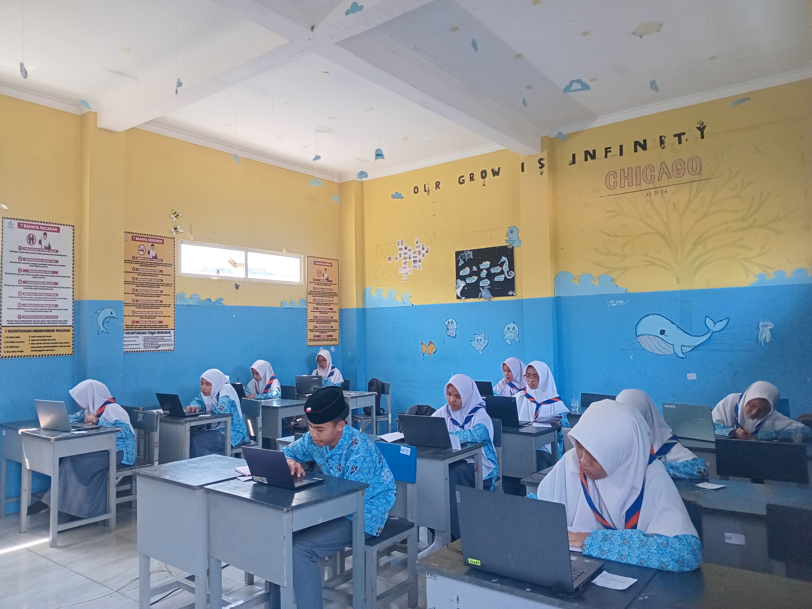
Simulasi TKA Kelas XII MA Inovatif Daarul Ihsan Bandung
14 Okt 2026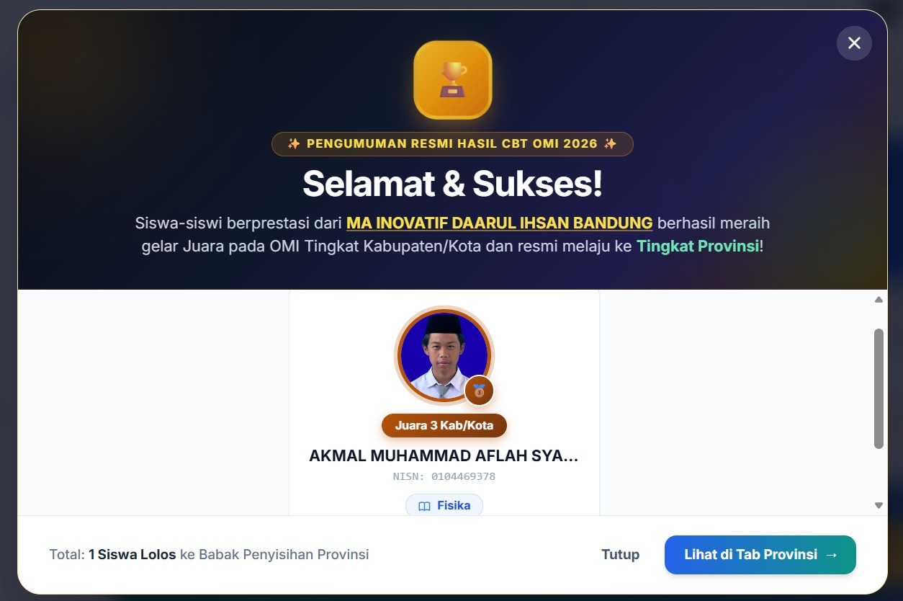
Juara 3 Olimpiade Madrasah Indonesia (OMI) Tingkta Kabupaten
13 Sep 2026Kegiatan Pesantren Kilat dan Pembinaan Karakter Santri
26 Okt 2026Jadwal Kegiatan Harian Santri
MA Inovatif Daarul Ihsan| No | Waktu (WIB) | Jenis Kegiatan Santri |
|---|---|---|
| 1 | 04:00 - 04:30 | Bangun Pagi, Persiapan & Sholat Tahajud |
| 2 | 04:30 - 05:30 | Sholat Subuh Berjamaah & Wirid / Doa Pagi |
| 3 | 05:30 - 06:15 | Setoran Hafalan Al-Qur'an (Tahfidz Pagi) |
| 4 | 06:15 - 07:00 | Mandi, Sarapan Pagi & Persiapan ke Sekolah |
| 5 | 07:00 - 07:30 | Apel Pagi & Sholat Dhuha Bersama |
| 6 | 07:30 - 12:00 | Kegiatan Belajar Mengajar (KBM) Formal Sesi 1 |
| 7 | 12:00 - 13:00 | Sholat Dzuhur Berjamaah & Makan Siang |
| 8 | 13:00 - 15:00 | KBM Formal Sesi 2 / Evaluasi Pembelajaran |
| 9 | 15:00 - 15:30 | Sholat Ashar Berjamaah & Istirahat Singkat |
| 10 | 15:30 - 17:00 | Kajian Kitab Kuning / Pengembangan Bahasa |
| 11 | 17:00 - 18:00 | Ekstrakurikuler / Olahraga & Mandi Sore |
| 12 | 18:00 - 19:00 | Sholat Maghrib Berjamaah & Murojaah Al-Qur'an |
| 13 | 19:00 - 19:45 | Makan Malam Bersama & Istirahat Sejenak |
| 14 | 19:45 - 20:15 | Sholat Isya Berjamaah Dilanjut Doa Bersama |
| 15 | 20:15 - 21:30 | Jam Belajar Mandiri / Bimbingan Malam (Study Club) |
| 16 | 21:30 - 22:00 | Evaluasi Harian & Persiapan Tidur |
| 17 | 22:00 - 04:00 | Waktu Istirahat Malam / Tidur Santri |
Program Unggulan Sekolah
Pendidikan formal di MA Inovatif berfokus pada kesuksesan masa depan siswa melalui bimbingan intensif masuk PTN dan beasiswa luar negeri (Mesir, Jepang, Australia), serta pengasahan public speaking lewat program pidato/dakwah formal. Selain memfasilitasi kreativitas digital santri melalui Studio Dai Podcast, sekolah menjamin lingkungan belajar yang nyaman dan aman dari perundungan (anti-bullying) dengan pengawasan CCTV di seluruh area strategis pesantren.
Dokumentasi & Fasilitas Kegiatan Sekolah
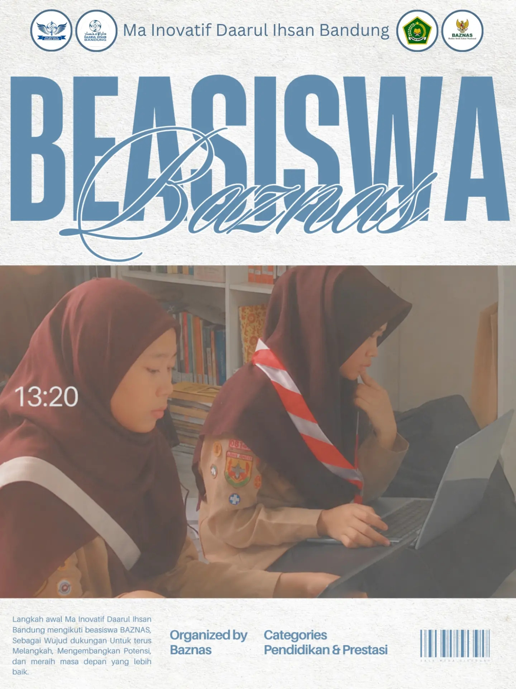
Pendaftaran Beasiswa Baznas
Program beasiswa yang di selenggarakan oleh Baznas
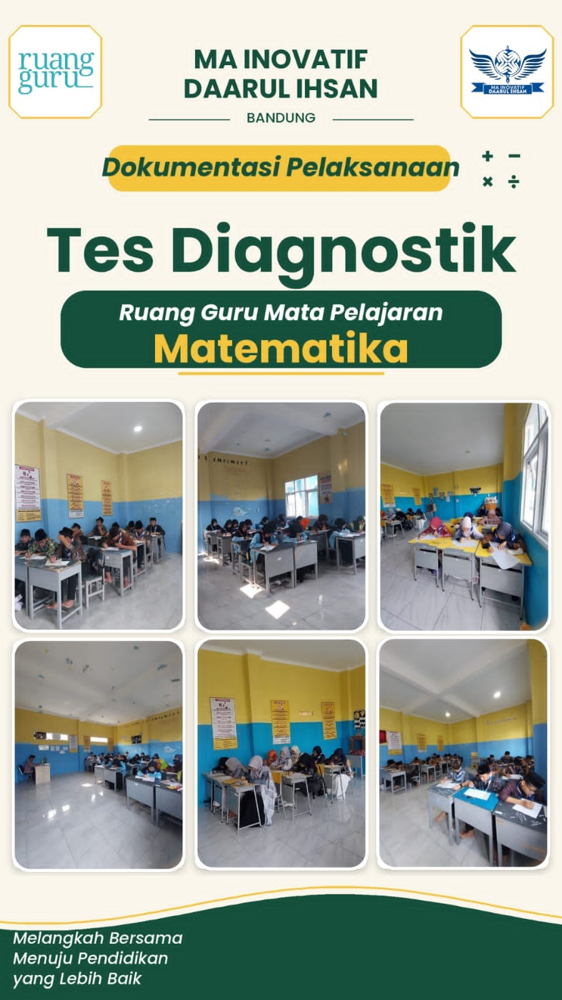
Tes Diagnostik
Pengembangan akademik di bidang Matematika Bersama Ruang Guru
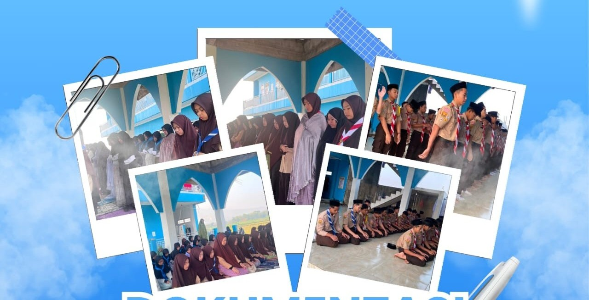
Kelas 10, 11, dan 12
Program wajib shalat dhuha setiap sebelum kegiatan pembelajaran di mulai
Program Unggulan Pesantren
Pesantren Inovatif Daarul Ihsaan mengintegrasikan tiga kurikulum utama, yaitu penguasaan aktif tiga bahasa asing (Arab, Inggris, Jepang) ala Gontor, kajian intensif Kitab Kuning ala Lirboyo, dan program Tahfidz Al-Qur'an (reguler minimal 6 juz atau akselerasi hingga 30 juz). Karakter santri juga dibentuk melalui kedisiplinan ibadah, pembinaan adab, serta berbagai ekstrakurikuler berprestasi seperti taekwondo, silat, dan memanah.
Dokumentasi & Kegiatan Santri Pesantren
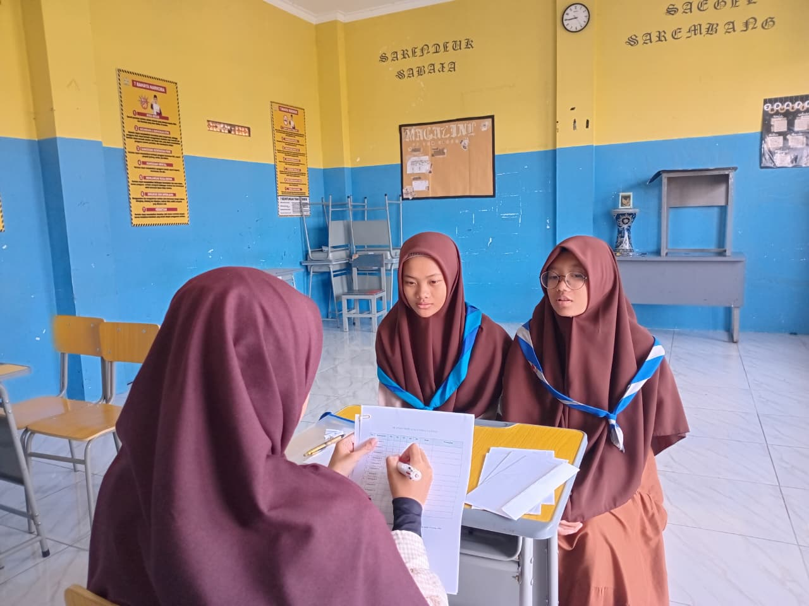
Tahfidz Al-Qur'an & Setoran
Bimbingan hafalan harian & program akselerasi
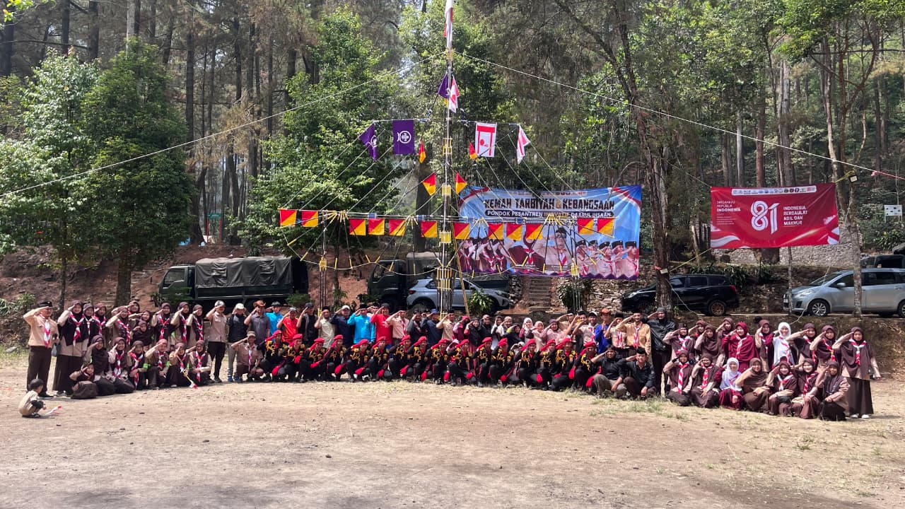
Kegiatan Kemah Tarbiyah DAI Bandung dan Cimahi
Menyambungkan tali silaturahmi
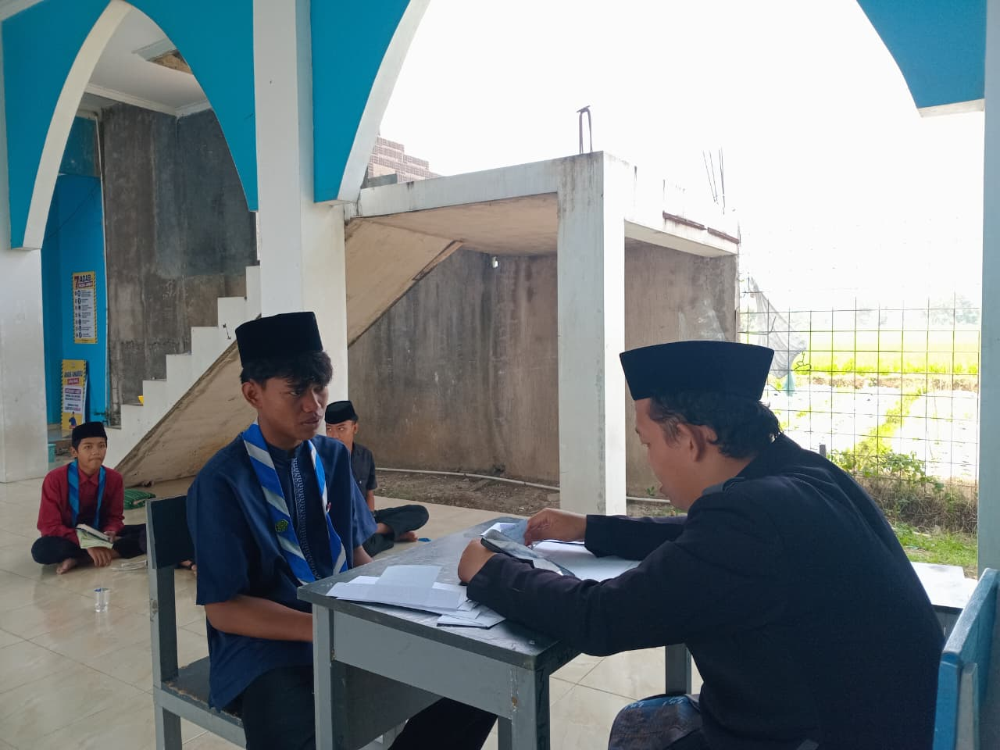
Bahasa Asing Interaktif
Percakapan harian Arab, Inggris & Mandarin
Ekstrakurikuler Taekwondo
Ekstrakurikuler Taekwondo di MA Inovatif Daarul Ihsan bertujuan untuk melatih ketangkasan fisik, disiplin mental, serta kedisiplinan santri. Di bawah bimbingan pelatih profesional, santri diajarkan seni bela diri, ketahanan stamina, serta nilai-nilai keolahragaan yang menjunjung tinggi kedisiplinan dan rasa percaya diri.
Dokumentasi Kegiatan Taekwondo
Latihan Fisik & Jurus (Poomsae)
Pembentukan stamina & teknik dasar tendangan

Ujian Kenaikan Sabuk (Geup)
Evaluasi periodik sertifikasi tingkatan sabuk santri
Ekstrakurikuler Pramuka
Gerakan Pramuka MA Inovatif Daarul Ihsan membentuk kepemimpinan, kemandirian, dan kepedulian sosial santri melalui kegiatan kepanduan yang edukatif dan menyenangkan. Program mencakup latihan ketangkasan pionering, sandi, tali-temali, penjelajahan alam, hingga perkemahan rutin (Perjusami).
Dokumentasi Kegiatan Pramuka
Pionering & Tali-Temali
Pelatihan keterampilan pembuatan tiang & jembatan
Perkemahan & Api Unggun
Kegiatan outdoor pembentukan karakter & kebersamaan
Galeri Dokumentasi Ekstrakurikuler Pramuka
Berikut adalah dokumentasi berbagai kegiatan kepanduan dan latihan rutin Ekstrakurikuler Pramuka MA Inovatif Daarul Ihsan dalam membentuk kedisiplinan, kemandirian, serta jiwa kepemimpinan santri.
Kemah Tarbiyah di Gunung Puntang 2026
Program Tahunan Daarul Ihsan Bandung - Cimahi
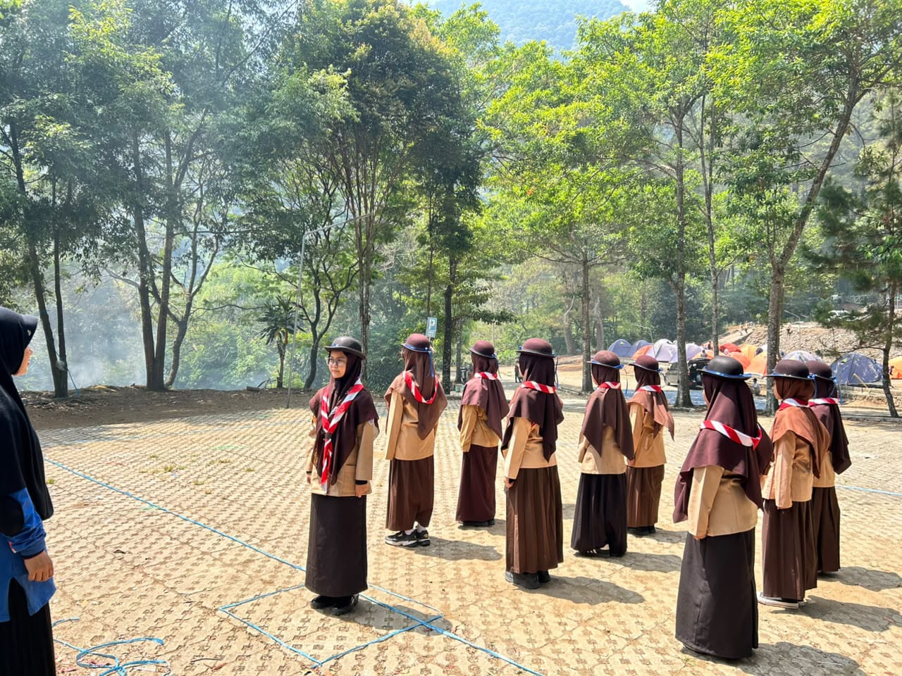
Lomba LKBB Antar Kelompok Akhwat
Kegiatan outdoor perlombaan LKBB akhwat
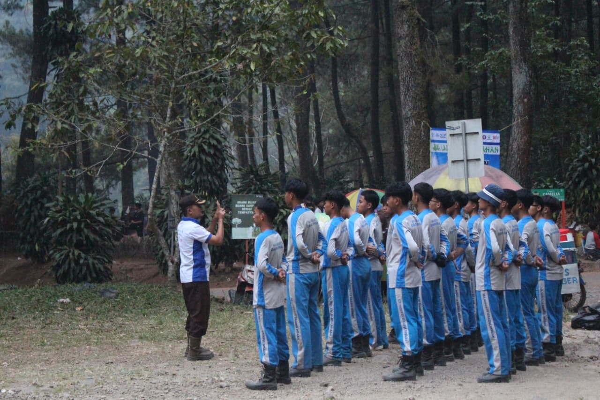
Latihan LKBB Ikhwan
Persiapan Latihan LKBB untuk Upacara 17 Agustus 2026
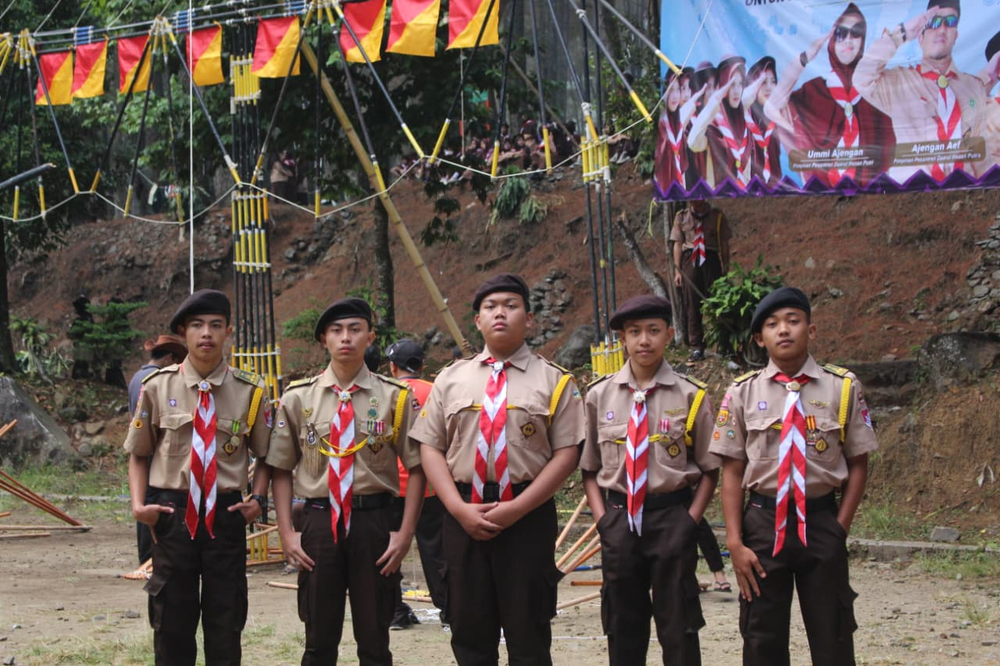
Pasukan Upacara
(Pemimpin Upacara dan Pemimpin Barisan)
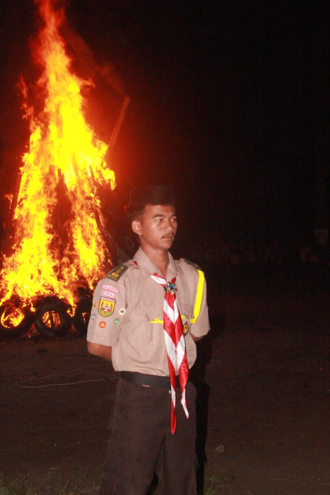
Malam Keakraban Api Unggun
Mengukuhkan dedikasi serta nilai-nilai integritas yang telah ditanamkan sepanjang kegiatan ini
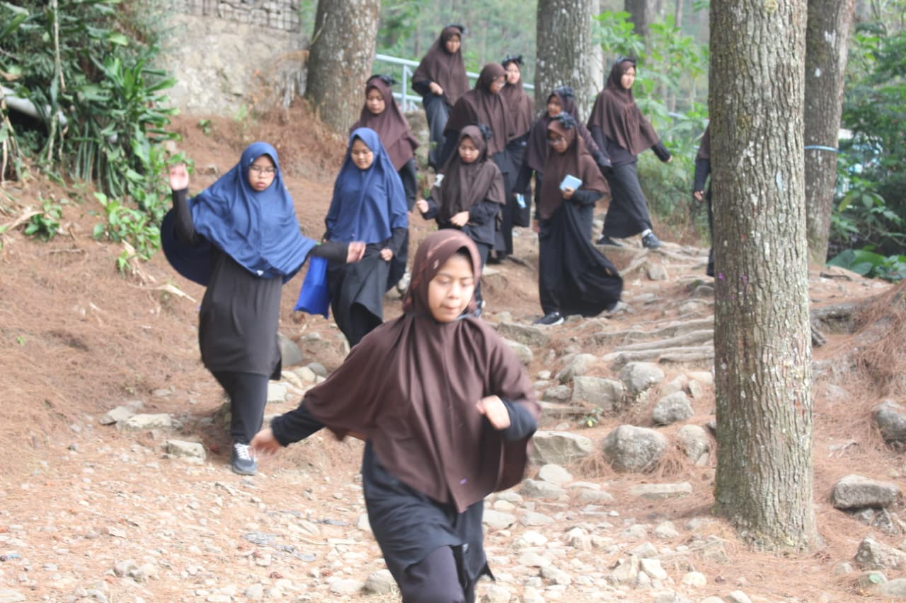
Penjelajahan & Tracking
Uji ketangkasan menyusur jalur alam terbuka